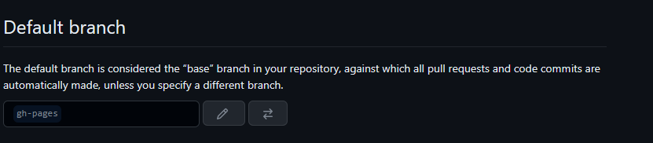
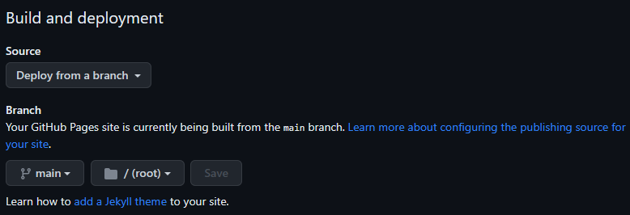

基于 Github Pages + Hexo 搭建个人博客
写作流程
- 新建文章
输入命令：
hexo new post_name，自动在source/_post目录下生成post_name.md文件
- 本地预览
输入命令（blog目录下使用git）：
hexo s
- 确认无误后生成HTML文件
输入命令：
hexo g
- 部署到Github
输入命令：
hexo d
错误集锦
1. 解决 Github port 443: Time out
1 | |
2. hexo博客同步管理及迁移
远程仓库只会保存hexo发布的静态 HTML文件，而博客源码和主题配置保存在本地。针对此问题，通过git分支实现同一个仓库保存静态网页和博客源码。
-
新建git分支
使用main分支保存hexo生成的静态网页；新建gh-pages分支来保存博客源码。在github上打开Pages对应的仓库，也就是以"username.github.io"命名的仓库，然后建立gh-pages分支。
-
更改仓库的默认分支
GitHub的默认分支为main分支，对于一个仓库
project_name，当通过git clone https://github.com/username/project_name.io.git下载代码时，实际拉取的是默认分支main对应的代码，而用hexo写博客时，通常关注markdown文件，对于deploy生成的main分支代码并不需要关注。因此可将仓库的默认分支改为保存源码的gh-pages分支，这样通过git clone拉取的就是gh-pages分支代码了。
在仓库主页面，通过Settings更改默认分支为gh-pages。
 -
修改
_config.yml中的deploy参数1
2
3
4
5
6
7
8
9
10
11
12
13# Deployment
## Docs: https://hexo.io/docs/one-command-deployment
deploy:
- type: git
repo: https://github.usernameyusernameylee.github.io
branch: main
- type: git
repo: https://githusernameuusernameurdylee.github.io
branch: gh-pages
extend_dirs: /
ignore_hidden: false
ignore_pattern:
public: . -
推送博客源码
把本地hexo项目与
gh-pages分支关联，把博客源码推送到该分支：1
2
3git add .
git commit -m 'hexo source post'
git push origin gh-pages -
执行
hexo g -d生成网站并部署到GitHub -
新环境搭建
假设我们换电脑了，要在新环境继续在原有仓库基础上写文章，此时通过
git clone将博客源码拉到本地，然后安装、初始化hexo（安装node.js和git）：1
2
3
4
5
6
7git clone git@github.com:username/username.github.io.git
cd username.github.io
npm install -g hexo-cli
npm install
npm install hexo-deployer-git -save
hexo new post_name
hexo g -d以后无论在哪台电脑上，更新以及提交博客，依次执行下列步骤即可：
1
2
3
4
5
6git pull
git add -A
git commit -m "--"
git push origin gh-pages
hexo clean
hexo g -d -
注意事项
如果gh-pages分支已作为了默认分支并部署了静态文件，那么需要将该分支清空再保存博客源码，并且要将在
Pages页面，将 Branch 设置为main，否则会出现下面的错误。
- github上切换到
gh-pages分支，git clone仓库到本地。- 此时本地会多出一个
username.github.io文件夹，删除除.git文件夹外的其他文件夹。- 命令行
git add -A把工作区的变化（包括已删除的文件）提交到暂存区（ps:git add .提交的变化不包括已删除的文件）。- 命令行
git commint -m "some description"提交。- 命令行
git push origin hexo推送到远程hexo分支。此时刷下github，如果正常操作，hexo分支应该已经被清空了。- 复制本地
username.github.io文件夹中的.git文件夹到hexo项目根目录下。此时，hexo项目已经变成了和远程hexo分支关联的本地仓库了（该步可以省略）。
3. 部署后访问无效，在Pages 页面，将 Branch 设置为main，稍等片刻重新打开网站。

参考资料
- Hexo Docs：https://hexo.io/zh-cn/docs/
- Hexo Fluid 用户手册：https://fluid-dev.github.io/hexo-fluid-docs/
- 白嫖GitHub Pages，轻松搭建个人博客_Hexo_LigaAI_InfoQ写作社区
- hexojs/awesome-hexo: A curated list of awesome things related to Hexo (github.com)
- 解决 Github port 443 : Timed out - 知乎 (zhihu.com)
- hexo博客同步管理及迁移 - 简书 (jianshu.com)
- 使用git分支保存hexo博客源码到github - 知乎 (zhihu.com)
- 使用hexo，如果换了电脑怎么更新博客？ - 知乎 (zhihu.com)